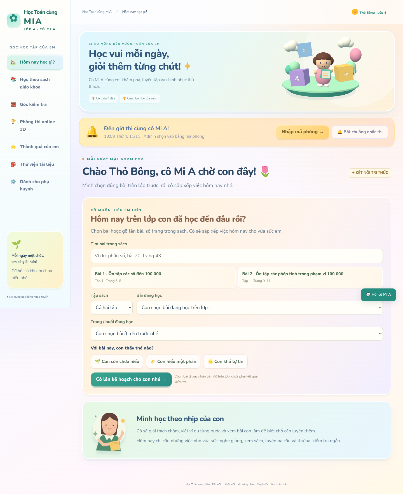
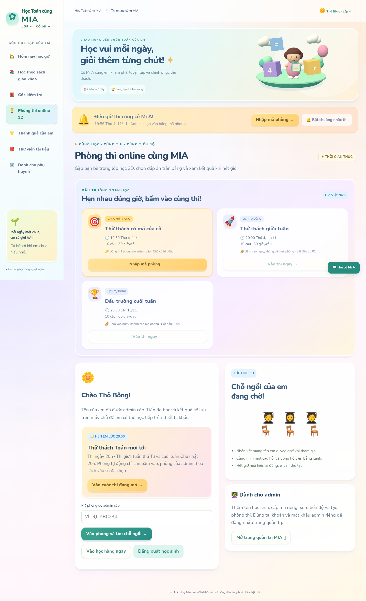
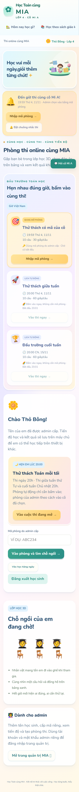
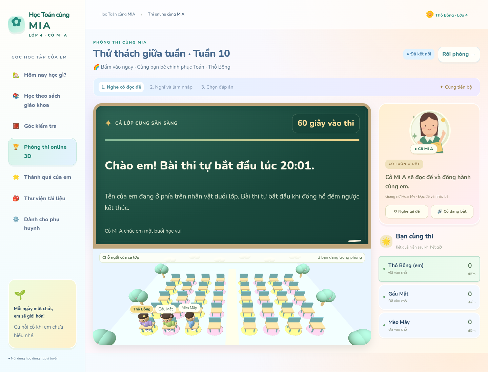
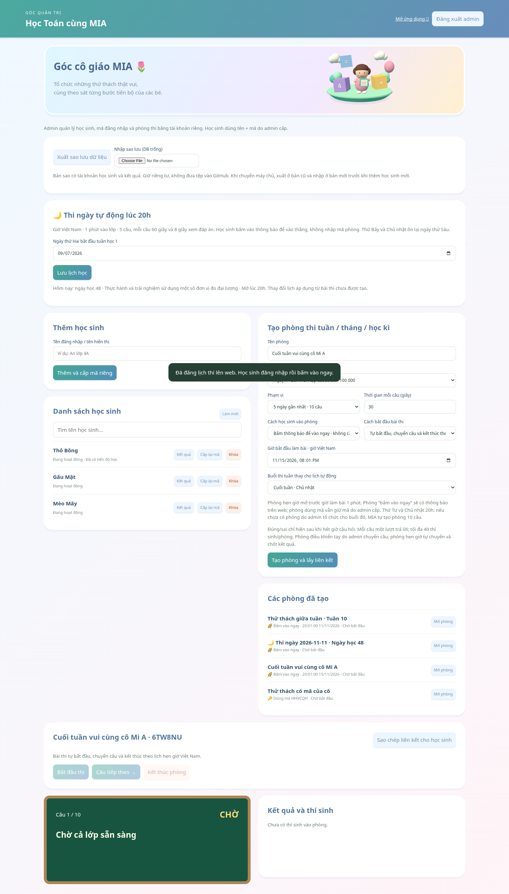

← Mở ứng dụng Học Toán cùng MIAVườn Toán 3D & những cuộc thi thật vui 🌈
Ảnh chụp kiểm thử Chrome/Chromium ở máy tính và điện thoại. Các tài khoản, phòng thi và mã hiển thị trong ảnh là dữ liệu minh họa, không phải dữ liệu thật của học sinh.
Mặc định: thứ Tư và Chủ nhật mở phòng lúc 20h, bắt đầu làm bài lúc 20h01 theo giờ Việt Nam. Phòng tự động cho học sinh đã đăng nhập bấm vào ngay. Phòng do admin tạo giữ cách vào và giờ thi đã chọn.

Vườn Toán 3D dùng chung cho các trang học
Lịch thi, thông báo và nút bấm vào phòng
Giao diện tươi vui trên điện thoại
Phòng thi giữa tuần vào trực tiếp
Admin chọn cách vào và giờ thi